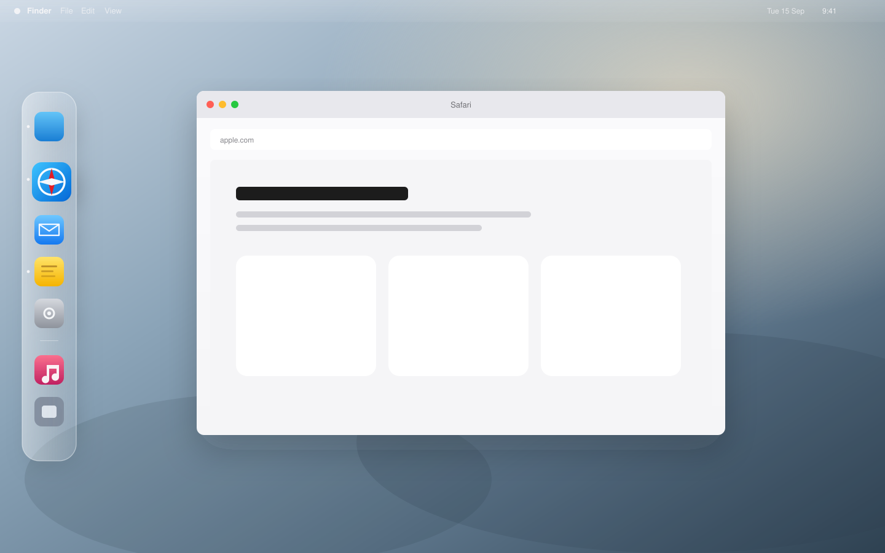

Magnify on hover
Icons grow under the pointer and neighbors make room. Off, or 1.0–3.0. Feels like the Dock you already trust.
macOS 26.5+ · Free · v1.0
Apple’s Dock takes one edge of one screen. Ultrawides and second displays still leave a tall strip idle. SIDEDOCK puts a second Dock there — pinned apps, recents, folders, glass, magnification. Beside the system Dock, not instead of it.

The product
SIDEDOCK is a real Mac app I built because I wanted a side Dock that felt like the real one — without a subscription, without a trial, and without asking for Screen Recording. Download it. Put it on your edge. That is the whole pitch.
What you get
Icons grow under the pointer and neighbors make room. Off, or 1.0–3.0. Feels like the Dock you already trust.
Approach left or right — it slides in. Leave — it springs away. One panel on every display.
Drag apps from Finder to pin. Recents appear under a separator. Drop a folder and peek inside.
Menu bar settings for edge, size, magnification, and login. Config lives on your Mac as plain JSON.
Get SIDEDOCK
No installer wizard. No permission theater. SIDEDOCK does not ask for Accessibility or Screen Recording.
Grab SIDEDOCK 1.0 and open the disk image.
Drop the app in Applications. First launch can move itself there if you open from the disk image.
Move the pointer to the left or right of the screen. The glass strip slides in. Click like the Dock.
macOS 26.5 or later · Apple silicon & Intel
First open may need Control-click → Open until the build is notarized. That is Gatekeeper — not SIDEDOCK asking for extra power.
Built in public
This is a product I made and want people to actually use. If it fits your Mac, keep it. If you want to star the repo, file an idea, or jump in and improve something — that helps. If you just download and never look back, that also counts.
Connect
Questions, feedback, ideas, or just a note that you tried it — I read everything.